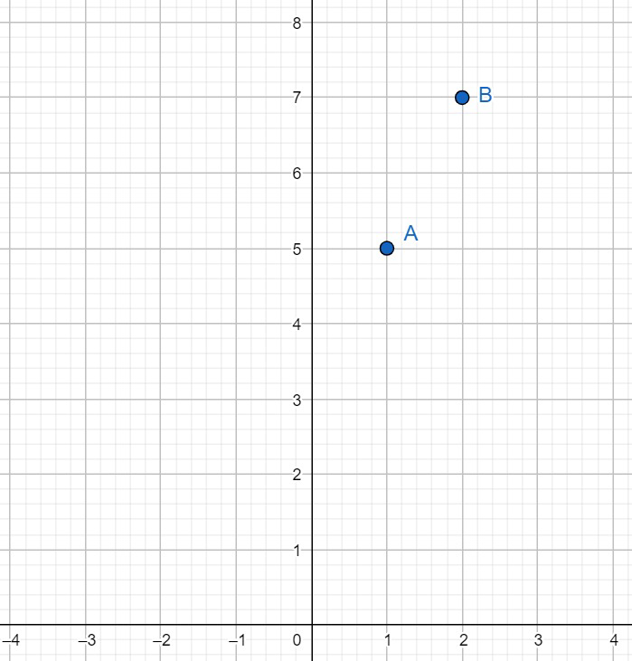
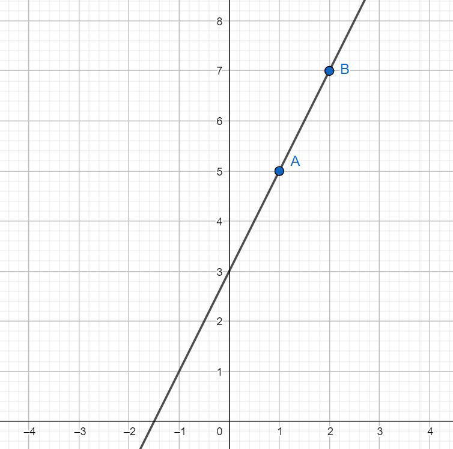
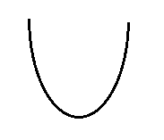
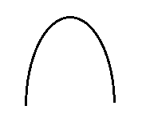
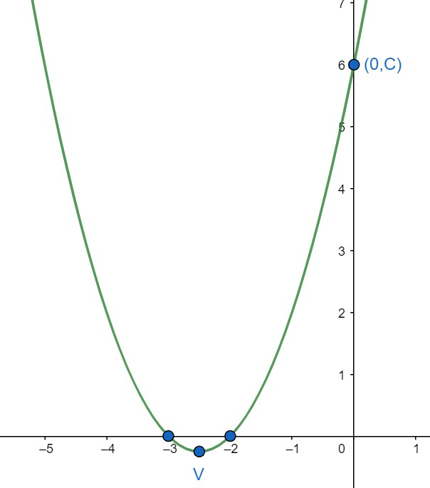
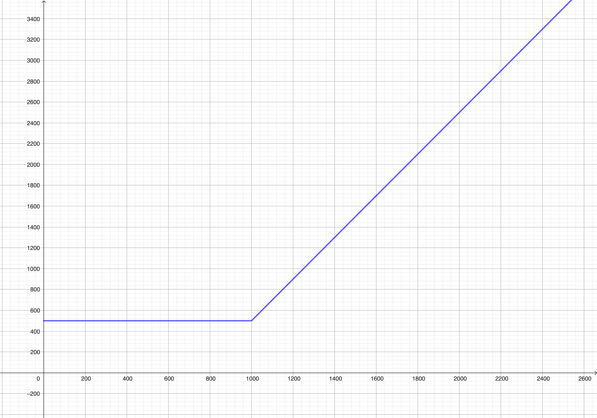
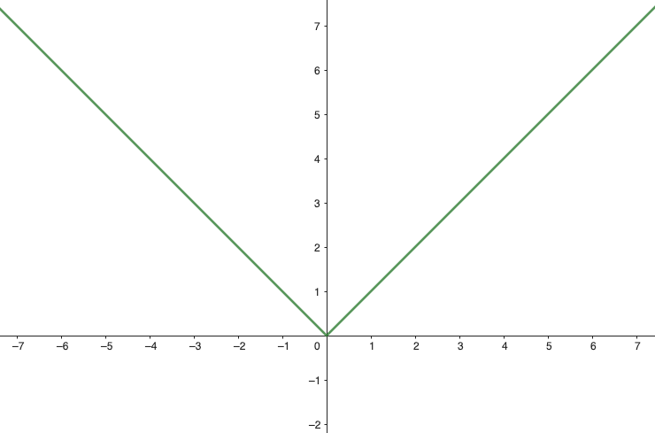

Matemáticas
Auditoría e Ingeniería en Control de Gestión
Contador Público y Auditor

Introducción
Dentro de la infinidad de funciones reales con las que se puede trabajar, destacaremos algunas que son de gran utilidad en aplicaciones:
-
Funciones constantes.
-
Funciones afines.
-
Funciones cuadráticas.
-
Funciones definidas por tramos.
Función Constante
Una función \(f\) se dice que es
constante si y sólo si \(f(x)\) puede escribirse en la forma \[f(x)=b\] donde \(b\) es un número
real.
Graficar las siguientes funciones
-
\(f(x) = 3\)
-
\(f(x) = -5\)
-
\(f(x) = \pi\)
Notar que la gráfica de una función constante es una recta horizontal.
Función afín
Una función \(f\) se dice afín si y sólo si \(f(x)\) se puede escribir de la forma \[f(x)=ax+b\] donde \(a\) y \(b\) son números reales, \(a\neq 0\).
-
\(Dom(f) = \mathbb{R}\)
-
\(Rec(f) = \mathbb{R}\)
¿Cómo es el gráfico de una función afín?
-
El gráfico de \(f(x)=ax+b\) corresponde al gráfico de la recta \(y=ax+b\) que tiene pendiente \(m=a\) y ordenada en el origen \(b\).
-
El gráfico de \(f(x)=ax+b\) interseca al eje \(Y\) en el punto \((0,b)\).
-
Para graficar una función afín es suficiente con conocer dos puntos de su gráfica.
Ejemplos de funciones afines
Graficar \(f(x)= 2x + 3\).
- Si \(x=1\), entonces \(y=f(1)=5\), luego la recta pasa por el punto \(A=(1,5)\)
- Si \(x=2\) entonces \(y=f(2)=7\), luego la recta pasa por el punto \(B=(2,7)\)
- Graficamos los puntos encontrados

- Trazamos la recta que pasa por ambos puntos

Ejemplos de funciones afines
Suponga que \(f\) es una función afín tal que \(f(-2) = 6\) y \(f(1) = -3.\) Encuentre una expresión para \(f(x)\).
La propietaria de una tienda de embutidos inicia su negocio con una deuda de $100.000. Después de operarla durante cinco años, ella acumula una utilidad de $40.000. Determinar la función afín que describe las utilidades con respecto a los años transcurridos desde que se inició el negocio.
Función Cuadrática
Una función \(f\) se dice cuadrática si y sólo si \(f(x)\) se puede escribir en la forma
\[f(x)=ax^2+bx+c\]
donde \(a\),\(b\) y \(c\) son números reales, con \(a\neq
0\)
El gráfico de una función cuadrática \(y=f(x)=ax^2+bx+c\) se llama parábola.
Gráfico de una Función Cuadrática
-
Si \(a>0\) la parábola se abre hacia arriba:

-
Si \(a<0\) la parábola se abre hacia abajo:

-
El vértice de la parábola es el punto \[V = \left(-\dfrac{b}{2a} , f\left( -\dfrac{b}{2a}\right)\right).\]
-
La intersección de la parábola con el eje \(Y\) ocurre en el punto \((0,c).\)
-
La(s) intersección(es) de la parábola con el eje \(X\) están dadas por los puntos \((x_1,0)\) y \((x_2,0)\), donde \(x_1\) y \(x_2\) son las raíces (si es que existen) de la ecuación cuadrática \(ax^2+bx+c=0\).
Ejemplo de Gráfico de una Función Cuadrática
Grafique la función \(f(x) =x^2 + 5x +
6\)
-
Como \(a=1 > 0\) la parábola se abre hacia arriba.
-
El vértice está dado por \[V = \left(-\dfrac{b}{2a} , f\left( -\dfrac{b}{2a}\right)\right) = \left( -\dfrac{5}{2} , f\left( -\dfrac{5}{2}\right)\right) = \left( -\dfrac{5}{2} , -\dfrac{1}{4} \right)\]
-
La intersección de la parábola con el eje \(Y\) ocurre en el punto \((0,6).\)
-
Al resolver \(x^2+5x+6 = 0\) tenemos que las soluciones son \(x_1=-2\) y \(x_2=-3\), por lo que la parábola interseca al eje \(X\) en los puntos \((-2,0)\) y\((-3,0).\)
Ejemplo de Gráfico de una Función Cuadrática
Por lo tanto, el gráfico correspondiente a \(f\) es la párabola

Dominio y recorrido de una Función Cuadrática
Si \(f(x)=ax^2+bx+c\) es una función cuadrática con \(a\neq 0\), entonces
-
Dom\((f) = \mathbb{R}\)
-
Si \(a>0\) entonces Rec\((f) = \left[f\left( -\dfrac{b}{2a}\right) , +\infty\right[\). Es decir, desde la ordenada del vértice del gráfico hacia arriba.
-
Si \(a<0\) entonces Rec\((f) = \left]-\infty, f\left( -\dfrac{b}{2a}\right)\right]\). Es decir, desde la ordenada del vértice del gráfico hacia abajo.
Ejemplo de Dominio y recorrido de una Función Cuadrática
Si \(f(x)=-3x^2 + 6x + 1\),
calcular Dom\((f)\) y Rec\((f)\).
-
Dom\((f) = \mathbb{R}\)
-
Como \(a = -3 < 0\) entonces \[\begin{aligned} \text{Rec}(f) & = \left]-\infty, f\left( -\dfrac{b}{2a}\right)\right] \\ &= \left]-\infty, f\left(1\right)\right]\\ &= \left]-\infty, 4\right]. \end{aligned}\]
Función definida por tramos
Una función \(f\) se dice definida por tramos si y sólo la fórmula \(f(x)\) está dada por mas de una expresión que depende del conjunto al cual pertenece \(x\).
Un ejemplo de una función definida por tramos es la función \[f(x)=\begin{cases} -1&\text{si }-5<x<1,\\ 0&\text{si }1\leq x<3,\\ x+3&\text{si }3\leq x\leq 6. \end{cases}\]
El dominio de esta función es \(\mathrm{Dom}(f)=]-5,6]\) y para encontrar la imagen de un \(x\) primero es necesario ver en que tramo se encuentra dicho \(x\).
Calcular \(f(-3),f(1),f(2),f(3),f(5)\).
Ejemplo de una función definida por tramos
Un taxista cobra $500 por los primeros 1000 metros de recorrido, y luego $2 por cada metro adicional de trayecto. Escriba una función que indique el costo de un viaje de \(x\) metros.
Si el viaje es de 0 a 1000 metros el costo del viaje está dado por \[C(x)=500\qquad \text{si }0\leq x\leq 1000\]
Si se recorren mas de 1000 metros, a los $500 ya acumulados hay que pagar $2 por cada metro adicional que se recorra, esto es \[C(x)=500+2(x-1000) \qquad\text{si }x>1000.\]
Es decir, la función de costo de un viaje de \(x\) metros está dada por \[C(x)=\begin{cases} 500&\text{si }0\leq x\leq 1000,\\ 500+2(x-1000)&\text{si } x>1000, \end{cases}\]
Ejemplo de una función definida por tramos

Función valor absoluto
La función \(f(x)=|x|\) se llama valor absoluto, tiene como \(\mathrm{Dom}(f)=\mathbb{R}\) y está definida como \[|x|=\begin{cases} x&\text{si }x\geq 0,\\ -x&\text{si }x<0. \end{cases}\]
Calcular \(|3|, |-6|, |0|\).
-
Se cumple que \(|x|\geq 0\) para todo \(x\in \mathbb{R}\).
-
Se cumple que \(\sqrt{x^2}=|x|\) para todo \(x\in \mathbb{R}\). Notar que NO es cierto que \(\sqrt{x^2}=x\).
Función valor absoluto
El gráfico de la función valor absoluto está dado por
